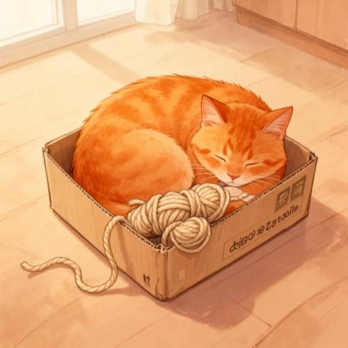
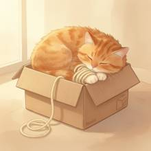
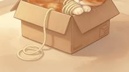

Logical Reasoning — In the warm healing illustration style, an orange cat is curled up in
In the warm healing illustration style, an orange cat is curled up in a carton with wool wrapped around its feet, but there are no wool balls next to it.

Direct — one call, no iterationContinuum — Qwen3.8-27B + FLUX.2-dev
Judge — Direct
FAILLogical Reasoning — The prompt requires wool to be wrapped around the cat's feet. In the image, a bundle of wool is placed next to the cat's paws inside the box, but it is not wrapped around them. Therefore, the specific action described is not depicted.
FAILGrammar - Negation — The prompt states that there should be "no wool balls". The image, however, clearly shows a large bundle of off-white wool or yarn placed inside the carton with the cat.
PASSStyle — The image is rendered in a soft, painterly style. It uses a warm color palette with golden light creating a peaceful and cozy atmosphere, which is consistent with the "warm healing illustration style".
PASSRelationship - Inclusion — The image shows an orange cat curled up and sleeping. The cat is located entirely within the confines of a cardboard box, which is a type of carton.
Judge — Continuum
PASSLogical Reasoning — The image correctly depicts the logical combination of two conditions: there is a thick, wool-like rope wrapped around the cat's front paws, and simultaneously, there are no balls of wool present in the image.
PASSGrammar - Negation — The image adheres to the negative constraint, as there are no balls of wool visible anywhere in the scene.
PASSStyle — The image is presented in an illustration style characterized by soft lines, a warm color palette dominated by orange and beige tones, and gentle lighting, creating a serene and peaceful mood consistent with a 'warm healing illustration style'.
PASSRelationship - Inclusion — The image shows an orange cat curled up and sleeping inside a cardboard box, which is a type of carton.
What the agent did
Thinking
The user wants a warm, healing-style illustration (gijichu / guchan style, probably the cozy, soft, healing illustration genre). Content: an orange tabby cat curled up inside a cardboard box, with wool (yarn) wrapped around its front paws, and importantly, no ball of wool beside it. So the tricky part: wrap the yarn around its paws, but do not place a yarn ball beside it. Let me think about this. "Wool wrapped around its paws" — so yarn is looped around the cat's paws/feet, but there's no yarn ball next to the cat. So the yarn should look like a strand of thread, or the cat has a thread wrapped around its paws, maybe a strand extending outward from off-frame or from a knitting needle, but there should be no ball of yarn anywhere in the scene. Common failure modes for the model: when you write "yarn" in the prompt, the model loves to draw a yarn ball next to the cat. So I need to be careful: describe it as "a strand of wool thread wrapped around the front paws" and explicitly state that there's no yarn ball. Let me generate the first image with flux2-dev. Prompt: "Warm, healing illustration, soft cozy style, gentle watercolor-like brushstrokes, a fluffy orange tabby cat curled up asleep inside a small brown cardboard box, soft cream wool thread loosely wrapped around the cat's front paws, a strand of thread trailing off-frame, no yarn ball, no ball of yarn anywhere, warm afternoon light, soft beige and cream tones, peaceful quiet atmosphere, flat soft shading, delicate details" Then inspect, and if there's a yarn ball, edit it out. Alright, let's get started.
Step 1 — `generate_image`
{
"prompt": "Warm healing-style illustration, soft cozy watercolor-like painting, a fluffy orange tabby cat curled up asleep inside a small brown cardboard box, soft cream wool thread loosely wrapped around the cat's front paws, a single strand of yarn trailing out of the box, no ball of yarn, no yarn ball anywhere in the scene, only a thin thread, warm afternoon sunlight, soft beige and cream color palette, gentle rounded brushwork, peaceful quiet atmosphere, flat soft shading, tender healing art",
"width": 1024,
"height": 1024,
"model": "flux2-dev"
}
Result img_0

Thinking
This is a lovely result. Let me check: - Warm, healing illustration style: Yes, soft watercolor tones, warm palette. - Orange tabby cat curled up in a cardboard box: Yes. - Wool wrapped around the front paws: Yes — cream-colored wool is wrapped around the paws/front paws. - No ball of wool next to it: The trailing yarn is just a thin thread forming a small loop on the floor, no ball of yarn. Good. Let me use inspect_region to check details, especially the area around the paws and the floor near the box, to make sure there's no ball of wool. The loop of thread on the floor might look a bit yarn-ball-like, but it's clearly just a strand of thread, not a ball of wool. I think this satisfies the requirements. Let me inspect the paw area to confirm the wrapping looks good, and check the floor area too.
Model
The first generation looks very close. Let me verify the details before deciding if anything needs fixing.
Step 2 — `inspect_region`
{
"image": "img_0",
"roi": "the area around the cat's paws and the yarn on the floor",
"padding": 0.1
}
Result img_1

Thinking
What I was able to confirm via inspection: - Wool is wrapped around the cat's front paws — good, cream-colored thread is wound around the front paws. - On the floor, there's a single strand of thread forming a small loop, but no ball of yarn. - No ball of yarn anywhere in the scene. All elements of the prompt are present and correct: 1. Warm, healing illustration style ✓ (soft, warm, cozy, watercolor-style) 2. Orange tabby cat curled up inside a cardboard box ✓ 3. Wool wrapped around the paws ✓ 4. No ball of wool next to it ✓ (only a thin thread) This is a good result. I'll mark img_0 as the best and stop — good enough is a stopping condition.
Model
The crop confirmed that everything is correct: the cream-colored wool is wrapped around the front paws, the trailing part is just a thin strand (with a small loop), and there's no ball of yarn anywhere in the scene. The style is a warm, soothing, soft watercolor-like finish, and the orange tabby cat is curled up asleep in a cardboard box.
Step 3 — `mark_best`
{
"image": "img_0",
"reason": "Warm healing-style illustration with an orange tabby cat curled up in a carton, wool wrapped around its paws, and no wool balls \u2014 only a single trailing strand. All prompt requirements verified by crop inspection."
}
Thinking
Done. The image has been marked as the best. Let me summarize for the user.
Model
Done! The illustration is complete and marked as the best result. **What's in the image:** - **Warm healing style** — soft, muted beige-and-cream watercolor-like painting with gentle rounded brushwork and warm afternoon light - **Orange tabby cat** — fluffy, curled up asleep inside a brown cardboard box, face resting on its paws - **Wool around its feet** — a cream strand of wool wrapped loosely around the front paws, with one thin strand trailing out over the box edge - **No wool balls** — verified up close: the only yarn present is the single trailing thread forming a small loop on the floor; no ball of wool anywhere in the scene